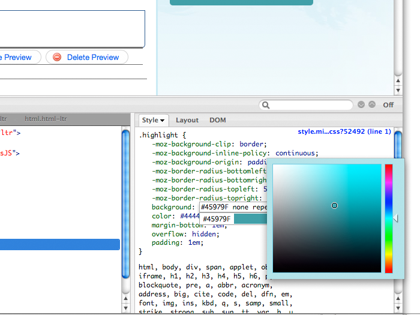
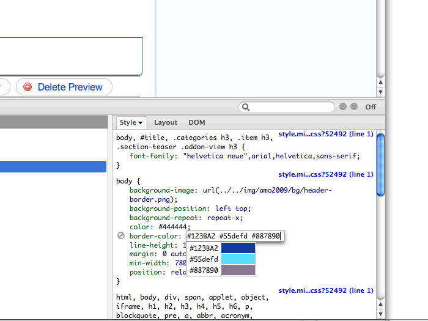
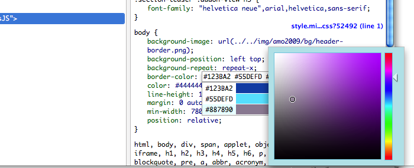
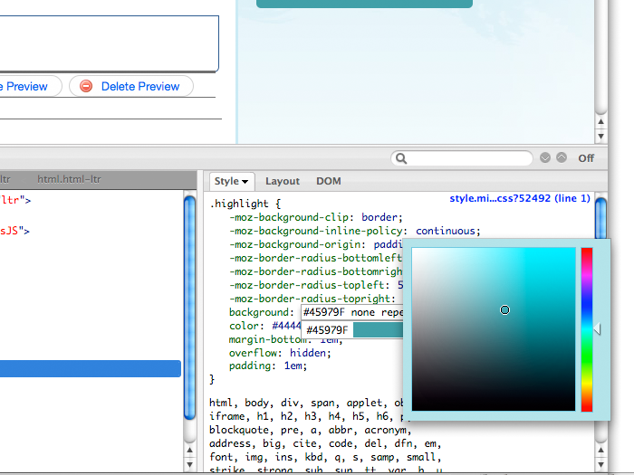
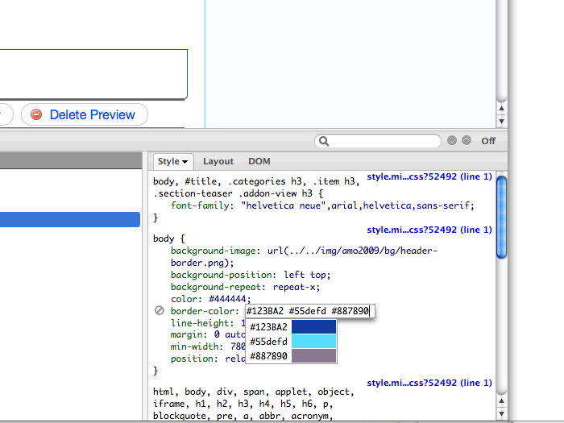
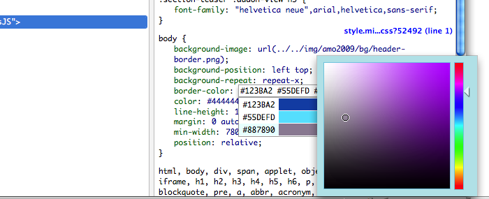

Adds a small color picker dialog when editing CSS rule in Firebug. The addon scans for values that can be parsed as CSS colors (#abc, rgb(1,2,3), blue, red etc.) and displays them in a drop-down list right below the firebug's CSS editor box. Clicking on the color value in the drop-down brings up a color picker dialog.
The plugin is compatible with:
Install the plugin from the Firefox Add-on site:
Report issues here: http://github.com/thedarkone/firepicker/issues
 





BSD License (same as Firebug)
thedarkone (http://github.com/thedarkone)
You can download this project in either zip or tar formats.
You can also clone the project with Git by running:
$ git clone git://github.com/thedarkone/firepicker